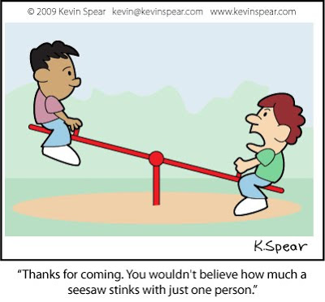
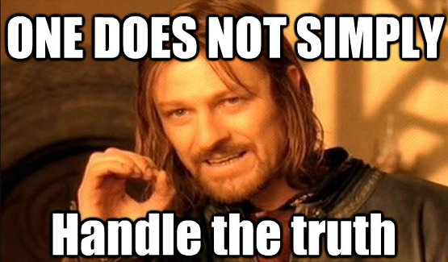

Two heads are better than one
July 17, 2015
Pairing
I felt that pairing with another person on challenges was beneficial in every instance. Before pairing, I worried about cases where two people did not have the same level of knowledge. When I actually started to pair, I realized that no matter what level the other person is at, you will still end up in a better position than you were before.
If one person has a better understanding of the topic, they could reinforce their understanding by going at a slower pace and teaching the other. When you think you know a topic well, you stop trying to learn more. When you explain to someone else, that other person might have questions that you haven't considered yet. The person with less understanding benefits as well as since they can discuss what they do not understand. The other person may have had the same problems when learning the topic themselves. This give-take cycle works well especially in the empathetic environment that DBC created.
Feedback
What drew me to Dev Bootcamp was watching the Emotional Intelligence video. I was looking forward to learning in an honest environment and getting feedback. When I started getting feedback on my pairing session, I enjoyed reading them and finding out what people thought about the way I worked.
Although most feedback was positive, I did get a bad one. Receiving negative feedback was definitely a lot tougher than I had thought it would be. In a feedback my pair stated that they had felt ignored. At first I felt attacked as I had thought I was being mindful. I immediately thought about what that pair had done that I didn't like. But after that initial response, I thought about why I might have gotten that negative comment in the first place. It made me realize that I needed to be more aware of my pair. It really taught me that it is okay to slow things down because the importance of each challenge isn't that we get the right answer but that we learned from doing it.